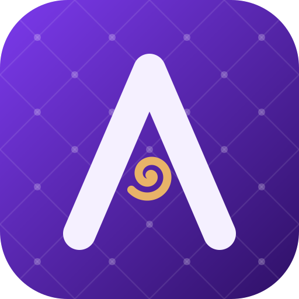

AsylumAsylum keeps everything that makes Zed fast and adds the tools you usually keep in other windows: device emulators, a browser, an API client, a database client and an agent that can drive all of them. Free and open source, with no account or subscription.
Apple Silicon and Windows x86_64. GPL-3.0-or-later.
Run and drive the simulator inside the editor on macOS, with touch, keyboard and rotation, plus a manager to download runtimes and create devices.
Asylum downloads the JDK, the SDK and the system images on demand and creates the virtual devices for you.
A Chromium tab in the workspace, with DevTools protocol access so the agent can open, inspect and interact with pages.
Postman collections and OpenAPI specs, environments, captures, cookies and code lenses that send requests straight from your spec.
PostgreSQL query editor, result grid and schema browser, with results the agent can read and explain.
Containers, logs and actions, ES|QL queries, live tail and traces, each in its own dock.
An agent tuned to spend fewer tokens, with tools for every dock, task agents, pipelines with acceptance criteria and plan mode. Bring your own model or any ACP agent.
Settings, keymap, snippets, themes, agents and flows follow you in a private gist on your own account. There is no Asylum server.
A unified pane layout, profiles with their own icon and data, and Asylum's own icon family and Polar theme.
| Platform | Status |
|---|---|
| macOS (Apple Silicon) | Supported. Download the DMG. |
| Windows (x86_64) | Preview. The iOS Simulator and Web Preview are macOS-only. |
| Linux | Builds from source. |
Builds are not notarized yet. On macOS, clear the quarantine flag once after installing:
xattr -dr com.apple.quarantine /Applications/Asylum.app
Installed copies update themselves from GitHub Releases.